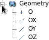
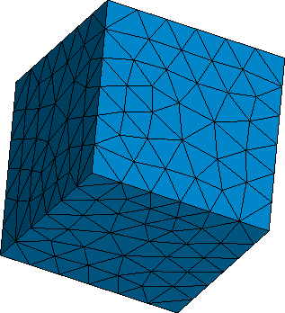

Content of this mini-tutorial:

 cfdmsh 4.0 documentation
cfdmsh 4.0 documentation cfdmsh 4.0 documentation


The purpose of this tutorial is to show how to create a Netgen refinement in Salome without using sub-shapes of the meshed object but using instead a distinct volume.
The following cfdmsh functions will be used:
NB: This tutorial was tested on Salome 7.7.1 on Linux with the following settings:
File > Preferences... > Geometry > Default display mode > Wireframe.
File > Preferences... > Geometry > Hide input objects from viewer > OFF.
Content of this mini-tutorial:

File > New
Click on  in the toolbar
in the toolbar

[Ctrl] + [T] → Select the "cfdmsh.py" file on your computer
New Entity > Primitives > Box → Apply and Close
New Entity > Primitives > Sphere → Apply and Close
Click on  in the 3D window toolbar
in the 3D window toolbar
Click on  in the toolbar
in the toolbar
Select "Box_1" → Mesh > Create Mesh →
Set "Algorithm" to "Netgen 1D-2D-3D" →
Click on  beside "Hypothesis" > NETGEN 3D Parameters →
beside "Hypothesis" > NETGEN 3D Parameters →
OK → Apply and Close
Select "Mesh_1" → Mesh > Compute → Close
Select both "NETGEN 3D Parameters_1" and the sphere ("Sphere_1") →
In the Python console, type:
MakeNetgenRefinement( 5, test = 1 )
or:
mnr( 5, test = 1 )
The number of refinement edges to create depends of the size of the refinement area and the desired cell size inside the refined area. This number should be always kept relatively low to ensure a good responsiveness of the Geometry module.
Select both "NETGEN 3D Parameters_1" and the sphere ("Sphere_1") →
In the Python console, type:
MakeNetgenRefinement( 5 )
or:
mnr( 5 )
This command created a set of distinct parallel edges on which were applied local cell size inside the "NETGEN 3D Parameters" hypothesis.
Select "Mesh_1" → Mesh > Compute → Close
Click on  in the toolbar
in the toolbar
Select "RefinementEdges_1" → Right-click > Show Only Children
Select "Sphere_1" → Right-click > Show
A bigger refinement cell size can be defined without creating a new edge set.
Click on  in the toolbar
in the toolbar
Select "NETGEN 3D Parameters_1" →
In the Python console, type:
ClearNetgenRefinement( )
or:
cnr( )
Select "Mesh_1" → Mesh > Compute → Close

Select both "NETGEN 3D Parameters_1" and "RefinementEdges_1" →
In the Python console, type:
SetNetgenRefinement( 10 )
or:
snr( 10 )
Select "Mesh_1" → Mesh > Compute → Close
You can close this study.
END OF THIS TUTORIAL
cfdmsh 4.0 documentation
tougeron-cfd.com © 2016